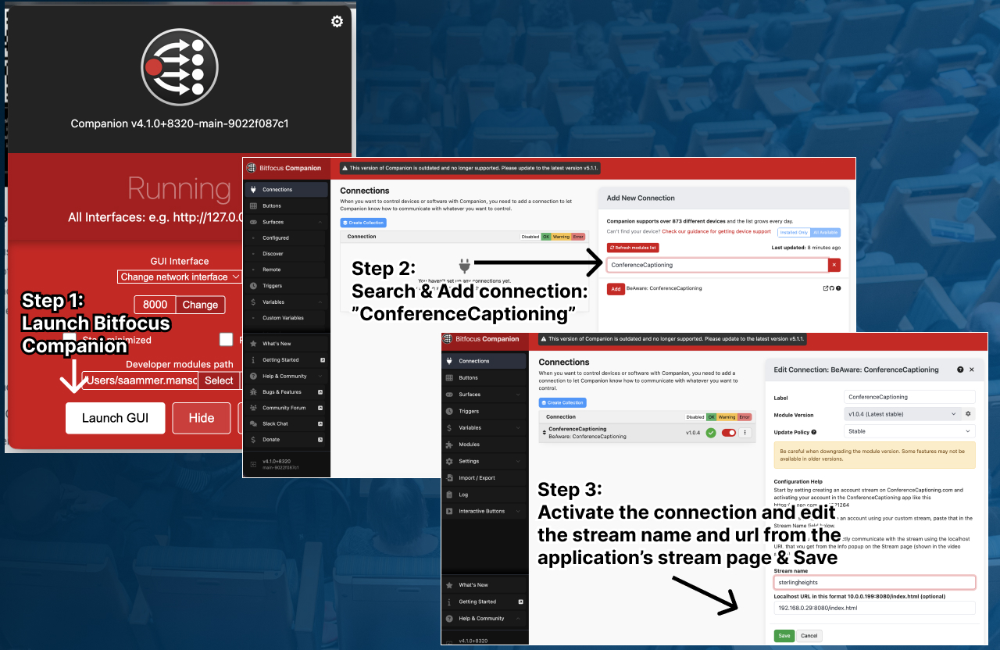
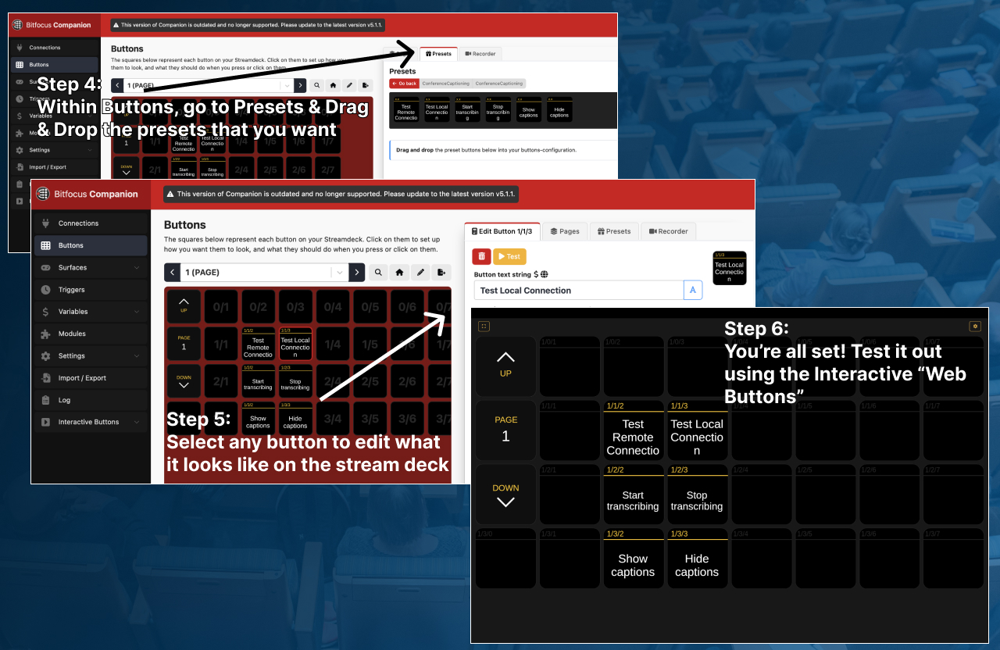

Control Event Live Captions & Translations with Bitfocus Companion & Elgato Stream Deck
 Saamer Mansoor••Updated
Saamer Mansoor••Updated
To control live captions from a Stream Deck: install Bitfocus Companion on a computer on the same network as your captioning device, add the BeAware: ConferenceCaptioning connection, and assign its actions to buttons on your Elgato Stream Deck. You can then start and stop captions, change languages, and show or hide the captions on screen with one press. Everything runs on your local network, so it keeps working with no internet.
Why put captions on a Stream Deck?
Captions are only worth paying for if they are on screen at the right moment, in the right language, every time. During a live show the AV operator is already busy, and walking to the captioning device mid-show is a risk you don't need. A physical button turns captions into one more cue on the board you already run.
- Captions that behave like part of the show. Hide captions for a video or a musical number, then bring them back with one press. Nobody on stage or in the booth has to touch the captioning device.
- Any operator can run it. Labeled buttons for start, stop, show, hide and language mean a volunteer or a freelance tech can run captions after a two-minute walkthrough. You don't need to train people on the app.
- Fast language changes. When a new audience arrives or a session switches language, it is one button instead of a menu hunt.
- Nothing new to buy if you already own a Stream Deck. Companion is free and open source, and the ConferenceCaptioning module is free too.
- It keeps working when the Wi-Fi doesn't. The buttons talk to the captioning device over your local network, so a venue internet outage doesn't take your controls down.
Selling captions to a client? This makes the offer easier
For AV companies and event producers, accessibility often comes up as “can we add captions?” and stalls on “who is going to run them?” A Stream Deck page answers that. Captions become a line on your cue sheet and a few labeled buttons on gear your crew already knows, not a separate system to staff. You can add them to a client's show without adding a person to the booth.
How it connects to your Elgato Stream Deck
Elgato doesn't make a ConferenceCaptioning plugin. Instead, Bitfocus Companion sits in the middle, and it takes about two minutes to set up:
- The captioning device (Mac, iPad or iPhone) runs the captions and the translations on-device, and serves them on your local network.
- Companion runs on a computer on that same network, such as the show laptop or a small always-on machine. The ConferenceCaptioning module tells it how to talk to the device.
- Your Stream Deck plugs into the computer running Companion and shows the buttons you place on a page. Pressing one sends the command to the captioning device.
Because Companion works with other control surfaces too, you can keep a second set of the same buttons on a tablet or in a browser as a spare. The steps below show the full setup.
What you need
- A Mac, iPad or iPhone running the ConferenceCaptioning app.
- An Elgato Stream Deck (or another surface Companion supports).
- Bitfocus Companion, running on a computer on the same local network.
Before you start: create a stream and activate the app
- Create a customized stream in the ConferenceCaptioning customer portal.
- Activate your account in the ConferenceCaptioning app on your iPhone, iPad or Mac, and start streaming.
Step 1: Launch Bitfocus Companion
Open Companion on a computer on the same local network and click Launch GUI.
Step 2: Search for and add the connection
Go to Connections, search for ConferenceCaptioning (listed as BeAware: ConferenceCaptioning) and click Add.
Step 3: Enable the connection and set the stream name and address
Activate the connection, then enter your stream name and your captioning device's local address. Open the app and copy both from the stream page, and include the http:// prefix, for example http://192.168.0.100:8080. Click Save.

Step 4: Drag and drop buttons from the Presets
In Companion's Buttons page, open the Presets tab and drag the ConferenceCaptioning presets you want onto your button grid. The module covers these controls:
- Start and stop captions.
- Show and hide captions on screen.
- Language and live translation selection.
Step 5: Edit any button
Select a button to change its label and how it looks on your Stream Deck. Companion shows the same buttons on your connected Stream Deck, so anything you place on a page appears on the hardware right away.
Step 6: Test it with Web Buttons
Companion generates a Web Buttons page you can use to test without hardware. On the computer running Companion, open http://127.0.0.1:8000/tablet and click the buttons.

A simple button layout to start with
- One button to start captions and one to stop them.
- One hide captions button for video playback and one to show them again.
- One button per language your audience uses.
Pro Tips
- Keep the address from changing: give the captioning device a static IP so the module keeps working from one event to the next. Here's how on a Mac.
- No Stream Deck? Open http://{device IP}:8080/control.html in any browser on the same network for the same start, stop, show and hide controls.
- Pair it with your video setup: use the buttons while captions run in OBS or ProPresenter.
- Mission-critical show? Add a backup device with hot-failover redundancy.
- Module help and issues: the module is open source on GitHub.
Frequently asked questions
Is there a Stream Deck plugin for ConferenceCaptioning?
You control ConferenceCaptioning from an Elgato Stream Deck through the free ConferenceCaptioning module in Bitfocus Companion. Companion runs on a computer on your network and drives the Stream Deck buttons.
Does Stream Deck control of captions need internet?
No. Companion talks to the captioning device over your local network, so buttons keep working even if the venue internet goes down.
Which Stream Deck models work?
Companion supports the Elgato Stream Deck family, and also other control surfaces such as the Companion web interface and Loupedeck. Any surface Companion supports can control ConferenceCaptioning.
Can I control captions without a Stream Deck?
Yes. Open http://{device IP}:8080/control.html in any browser on the same network to start, stop, show and hide captions.
How do I add live captions to Bitfocus Companion?
Add the BeAware: ConferenceCaptioning connection in Companion's Connections page, enter your stream name and the captioning device's http:// local address, then drag the ConferenceCaptioning presets onto buttons. You can test them from Companion's Web Buttons page at http://127.0.0.1:8000/tablet before connecting a Stream Deck.
Can an AV company add live captions to a client's show without extra staff?
Yes. The captions run on a Mac, iPad or iPhone, and the show's existing operator can start, stop, show, hide and change languages from a few labeled Stream Deck or Companion buttons, so no extra person is needed in the booth.
How accurate and how fast are the captions? We measure them in the open, on a real NASA news conference, and publish the method, the data and the scoring script. Read the live captioning accuracy and delay benchmark.
Want one-button control of your captions?
ConferenceCaptioning runs entirely on-device, and Companion controls it over your local network, so your Stream Deck keeps working even if the venue internet goes down. Tell us about your setup and we'll help you plan it.
Related Articles
How to Add Live Captions & Translations to ProPresenter
A step-by-step guide to integrating live, real-time AI captions directly into your ProPresenter workflow for immersive event experiences.
Zero-Downtime Live Captions: How to Setup Hot-Failover Redundancy for Live Events
Ensure your captions never go down during critical live broadcasts with our robust hot-failover redundancy architecture.